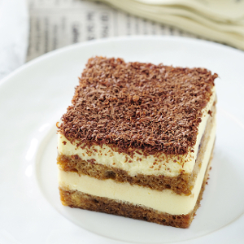

Tiramisu
Recept
Tiramisu is een klassiek Italiaans dessert met als belangrijkste ingrediënten cacao, mascarpone, koffie en een alcoholische drank, in het oude recept is dit marsalawijn. Een stukje Tiramisu is vaak erg machtig, als je weet dat Tiramisu het toetje wordt dan doe je er goed aan je niet helemaal vol te eten maar nog een plekje in je buik over te laten. Tiramisu kan op veel verschillende manieren gemaakt worden, bijvoorbeeld met speculaas in de sinterklaastijd, of met aardbeien in de zomer. Hieronder staan een heleboel lekkere recepten voor Tiramisu om eindeloos te variëren. Een leuk idee is ook om van drie lekkere varianten een beetje te maken. Zo kun je je gasten een trio van verschillende tiramisu aanbieden, geheid een succes en je weet meteen welke het beste in de smaak valt.Ingredienten
- 3 eieren
- 4 eetl suiker
- 300 gr mascarpone
- 1 pak lange vingers
- 1 kopje sterke koffie
- 3 eetl Cacaopoeder
- Scheutje drank, bv marsala wijn, amaretto, licor 43
Bereidingswijze
Splits de eieren en klop het eiwit in een schone kom stijf totdat je de kom op zn kop kunt houden zonder dat het eiwit er uit loopt. Zet zolang in de koelkast. Klop daarna de eidooiers samen met de suiker tot een luchtige massa. Schep de mascarpone door het eigeelmengsel en schep als laatste het eiwit er luchtig door. Schenk de koffie in een bordje en voeg een scheutje drank toe. Doop de helft van de lange vingers er een voor een in en leg op de bodem van een schaal. Giet de helft van het mascarpone mengsel er gelijkmatig bovenop en leg er weer een laag met in koffie gedoopte lange vingers op. Giet dan de rest van de room met mascarpone er boven op en zeef de cacaopoeder er overheen. Laat ten minste 8 uur opstijven in de koelkast. Het beste is om de tiramisu al een dag van te voren te maken.bron
